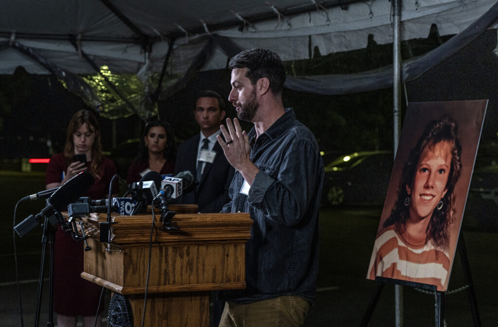

🕰️ The night, minute by minute
As recorded by Tori Gessner of WKRN, one of the media witnesses. She was originally scheduled to die that morning; last-minute appeals pushed it to the evening.
- 6:41 p.m.
Witnesses are brought into the witness chamber.
- 7:26 p.m.
The blinds onto the execution chamber open. Pike gives her final statement.
- 7:34 p.m.
Pike says her arm feels like it's about to burst. Over the next minutes she appears to be talking, breathing, moaning — and snoring.
- 7:46 p.m.
The blinds are closed. 🚪
- 7:49 p.m.
Blinds reopen. Pike is snoring with her mouth open. Still alive.
- 8:05 p.m.
Blinds go down again — and stay down.
- 8:53 p.m.
Witnesses are escorted out. Pike has not been declared dead. Nobody in the room knows what has happened.
- Thursday
Her legal team says she is in critical condition, receiving life-saving medical care at an off-site facility. 🏥


"I cannot emphasize enough how much of whatever just happened, happened behind a closed curtain when Christa Pike was still alive." — Steven Hale, Nashville Banner